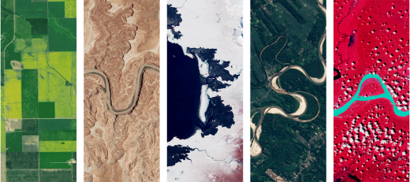

La NASA mira la Tierra; yo pienso en ti
La NASA puede observar nuestro planeta desde arriba y descubrir mil formas, ríos y colores. Yo miro estas imágenes y termino pensando en ti: en todo lo que me has contado, en las cosas que te emocionan y en lo bonita que se vuelve hasta una conversación cuando viene de ti. Desde que llegaste, encuentro pedacitos tuyos en cosas que antes solo miraba de pasada. Quizá por eso, aunque tu nombre aparezca junto a un pequeño píxel, para mí estás presente en muchísimo más. ♡